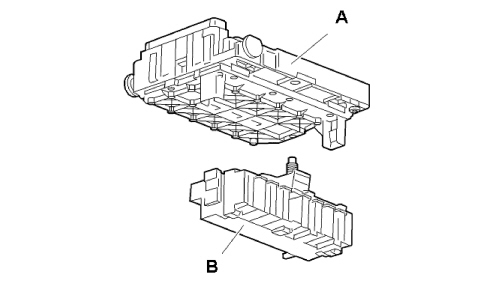
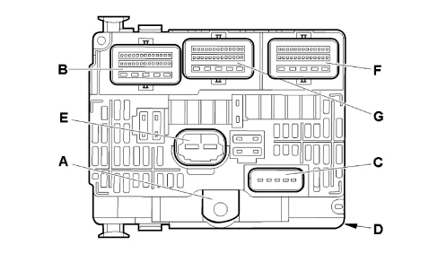
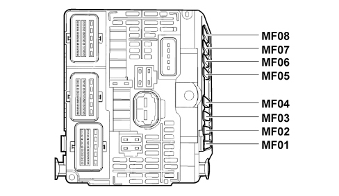
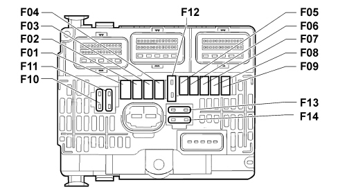

ENGINE COMPARTMENT NODE (NDVIM)
- Path
- Descriptions > 55 ELECTRICAL EQUIPMENT > 5505 INSTRUMENT/GAUGE ELECTRICAL CIRCUITS > 5505A MULTI-FUNCTION COMPONENTS > ENGINE COMPARTMENT NODE (NDVIM)
- Kind
- system description
- Applies to
- engines: 2.0 16V JTD, 2.2 16V JTD; all production periods; only with equipment: MY 2005
- Interactive page
- https://sloeber94.github.io/elrnDB-fUlss/en/#/179007198
Applies to: engines: 2.0 16V JTD, 2.2 16V JTD; all production periods; only with equipment: MY 2005
INTRODUCTION
The engine compartment node is located on the right side of the actual engine compartment (near the windscreen washer fluid reservoir).
NDVM FUNCTION
The function of the engine compartment node is to protect and distribute the power supplies to the various functions via:
- relays;
- fuses;
- minifuses;
- maxi fuses.
The NDVM consists of two combined modules (A and B):

Module A (BOO1) consists of an electronic card that houses relays fuses and a microcontroller that communicates via the CAN network with body computer (M001).
Module B contains the maxifuses (fuses with a high amp rating).

The main functions of the NDVM are:
- to distribute and protect (by means of fuses) the electrical power supplies of devices connected via the main wiring and engine wiring;
- to supply an electrical power supply to the maxifuse casing.

PROTECTION BY MEANS OF MAXIFUSES (CONNECTOR D)
The following table shows the devices protected by the maxifuses on the NDVM.
Pin | Maxi fuse | Devices protected | Amp rating [A] |
|---|---|---|---|
1 | MF01 | MAIN FAN | 50 |
2 | MF02 | ESP/ABS (POWER) | 40 |
3 | MF03 | ESP/ABS | 30 |
4 | MF04 | M001 | 60 |
5 | MF05 | M001 | 70 |
6 | MF06 | FREE | - |
7 | MF07 | FREE | - |
8 | MF08 | FREE | - |
POWER SUPPLIED BY NDVM
The engine compartment junction unit (with key ON and enablement from CODE), distributes the following power supplies and protects them with fuses:
- ABS, ESP;
- water in diesel sensor;
- glow plug control unit;
- air flow sensor;
- engine cooling fan assembly relay;
- engine coolant level;
- automatic transmission control unit;
- reversing switch/reversing light;
- gas discharge headlamps;
- diesel additive control unit;
- diesel additive pump;
- low beam headlamps;
- high beam headlamps;
- fog lamps;
- front windscreen wiper;
- headlamp washer pump;
- buzzer;
- additional outlets (climate control system);
- engine control niode actuators/sensors;
- engine management control unit;
- EGR solenoid;
- turbo pressure regulator solenoid;
- diesel heater;
- front/rear screen washer pump;
- fuel pump.
In the case of an impact, the body computer instructs the NDVM to cut off the fuel pump supply via the CAN network.

PROTECTION PROVIDED BY NDVM FUSES
Fuse | Power supply | Supply | Amp rating [A] |
|---|---|---|---|
F01 | +BAT | - ENGINE CONTROL UNIT - ENGINE FAN POWER RELAY - EGR SOLENOID VALVE - DIESEL PRESSURE ADJUSTMENT SOLENOID | 20 |
F02 | +BAT | HORN | 15 |
F03 | +BAT | WINDOW WASHER PUMP | 10 |
F04 | +BAT | HEADLAMP WASHER PUMP | 20 |
F05 | +15 | FUEL PUMP | 15 |
F06 | +15 | AUTOMATIC TRANSMISSION CONTROL UNIT - AIR FLOW METER - ENGINE WATER LEVEL - SECONDARY BRAKE SWITCH - CAR RIDE CORRECTOR - PUSHBUTTON CONTACT - AUTOMATIC TRANSMISSION GEAR CONTROL UNIT | 10 |
F07 | +15 | ESP CONTROL UNIT | 10 |
F08 | +BAT | ENGINE IGNITION COIL | 20 |
F10 | +BAT | - TURBINE SOLENOID - INJECTION PUMP AIR HEATER SOLENOID - EGR SOLENOID VALVE - TURBO PRESSURE ADJUSTMENT SOLENOID - RADIATOR WATER INLET SOLENOID - WATER RADIATOR SOLENOID - DIESEL HEATER | 30 |
F11 | +BAT | ADDITIONAL OUTLETS (CLIMATE CONTROL) | 40 |
F12 | +BAT | WINDSCREEN WIPERS | 30 |
F13 | +15 | BODY COMPUTER | 40 |
F14 | +BAT | FREE | - |
PERFORMANCE
The engine compartment junction unit node performs the following services:
- distributes and protects the +BATT and +15 power supplies of devices connected to the main wiring and engine wiring, short-circuits to earth in the event of malfunction (e.g. extended locking of an electric motor) and triggers the corresponding fuse;
- provides electrical power to the central door open/locking system;
- supplies the engine control unit and some of its devices after activation of the +15 supply;
- ensure power to the fuel pump is cut off in the event of a crash;
- supplies the Air Bag control unit with power;
- protects the circuit if the battery terminals are reversed;
- supplies the starter motor with power;
- supplies the engine cooling fan with power upon the request of the body computer via the CAN CAR network;
- controls the sound alarm upon the request of the body computer via the CAN CAR network.
- controls the low beam headlamps upon the request of the body computer via the CAN CAR network.
- controls the high beam headlamps upon the request of the body computer via the CAN CAR network.
- controls the foglamps upon the request of the body computer via the CAN CAR network.
- controls the flashers upon the request of the body computer via the CAN CAR network.
- controls the washer pump/screen wipers upon the request of the body computer via the CAN CAR network.
- controls the rear screen washer pump upon the request of the body computer via the CAN CAR network.
- controls the headlamp washer pump upon the request of the body computer via the CAN CAR network.
- controls the air condition compressor upon the request of the body computer via the CAN CAR network.
- generates a +15 signal upon the request of the body computer via the CAN CAR network and protects the supply line;
- controls +15 signal generation if communication is lost in the CAN CAR network;
- downloads the engine oil level signal and communicates signal status to the body computer via the CAN network;
- supplies a signal to excite the alternator;
- downloads the engine oil pressure signal and communicates signal status to the body computer via the CAN CAR network;
- downloads the engine oil temperature signal and communicates signal status to the body computer via the CAN CAR network;
- downloads the screen washer level signal and communicates signal status to the body computer via the CAN CAR network;
- downloads the water level signal;
- downloads the reversing light signal.
CONNECTOR PIN OUT
Connector a
This is the connector from which the NDVM receives power from the battery.
Connector b
Pin | Description |
|---|---|
1 | NC |
2 | IGNITION COIL POWER SUPPLY |
3 | LAMBDA SENSRO HEATER POWER SUPPLY |
4 | INJECTOR POWER SUPPLY |
5 | ENGINE CONTROL UNIT POWER SUPPLY |
6 | ENGINE OIL LEVEL ANALOGUE EARTH |
7 | ENGINE OIL LEVEL SIGNAL |
8 | ENGINE MANAGEMENT POWER RELAY CONTROL |
9 | MAIN ENGINE MANAGEMENT RELAY CONTROL |
10 | NC |
11 | NC |
12 | NC |
13 | NC |
14 | NC |
15 | NC |
16 | NC |
17 | NC |
18 | NC |
19 | NC |
20 | ENGINE OIL PRESSURE INFORMATION (LOW) |
21 | INFORMATION ON WATER DETECTED IN DIESEL |
22 | ENGINE OIL TEMPERATURE SIGNAL |
23 | NC |
24 | - SOLENOID PUMP POWER SUPPLY:SWIRL - INTAKE AIR HEATING - DIESEL INJECTION PUMP - TURBO PRESS REGULATION - INTAKE AIR HEATING |
25 | NC |
26 | NC |
27 | NC |
28 | NC |
Connector c
Pin | Description |
|---|---|
1 | AIR CONDITIONER COMPRESSOR CONTROL |
2 | IGNITION COIL CONTROL |
3 | ALTERNATOR EXCITATION CONTROL |
4 | NC |
5 | COOLING COMPRESSOR EARTH |
Connector e
Pin | Description |
|---|---|
1 | +15 POWER SUPPLY |
2 | AIR CONDITIONER ADDITIONAL FAN CONTROL |
Connector f
Pin | Description |
|---|---|
1 | NC |
2 | ENGINE FAN 3 SPEED RELAY |
3 | ESP CONTROL UNIT |
4 | AUTOMATIC TRANSMISSION CONTROL UNIT |
5 | FUEL PUMP CONTROL |
6 | NC |
7 | NC |
8 | NC |
9 | IGNITION CONTROL |
10 | NC |
11 | CAN CAR HIGH |
12 | CAN CAR LOW |
13 | REVERSING LIGHT CONTROL |
14 | NC |
15 | PARKING STATUS/AUTOMATIC TRANSMISSION NEUTRAL INFORMATION |
16 | START-UP ENABLEMENT |
17 | LEFT TURN SIGNAL REPEATER OUTPUT |
18 | RIGHT TURN SIGNAL REPEATER OUTPUT |
19 | EARTH |
20 | - POEWR STEERING POWER SUPPLY - DEBIMETER - ENGINE WATER PRE-POST HEATING CONTROL UNIT - PARKING BRAKE SENSOR |
21 | NC |
22 | CANISTER BLEED SOLENOID |
23 | CAN (+) POWER SUPPLY |
24 | NC |
25 | WINDSCREEN WIPER MOTOR STOP CONTROL |
26 | BODY EARTH |
27 | FAST WIPER SPEED CONTROL |
28 | SLOW WIPER SPEED CONTROL |
Connector g
Pin | Description |
|---|---|
1 | HEADLAMP WASHER PUMP CONTROL |
2 | WINDOW WASHER PUMP/WIPER CONTROL |
3 | HORN |
4 | NC |
5 | REARSCREEN WASHER PUMP CONTROL |
6 | RIGHT FRONT TURN SIGNAL |
7 | NC |
8 | LEFT FRONT TURN SIGNAL |
9 | NC |
10 | NC |
11 | RIGHT FRONT SIDE LIGHT CONTROL |
12 | LEFT FRONT SIDE LIGHT CONTROL |
13 | RIGHT FOG LAMP POWER SUPPLY |
14 | ENGINE WATER LEVEL INFORMATION |
15 | NC |
16 | NC |
17 | NC |
18 | NC |
19 | ENGINE CONTROL UNIT POWER SUPPLY |
20 | NC |
21 | NC |
22 | NC |
23 | NC |
24 | LEFT FOG LAMP POWER SUPPLY |
25 | LEFT LOW BEAM HEADLAMP CONTROL |
26 | RIGHT LOW BEAM HEADLAMP CONTROL |
27 | RIGHT HIGH BEAM CONTROL |
28 | - LEFT HIGH BEAM CONTROL - HIGH BEAM HEADLAMP RELAY CONTROL (XENON LIGHTS) |